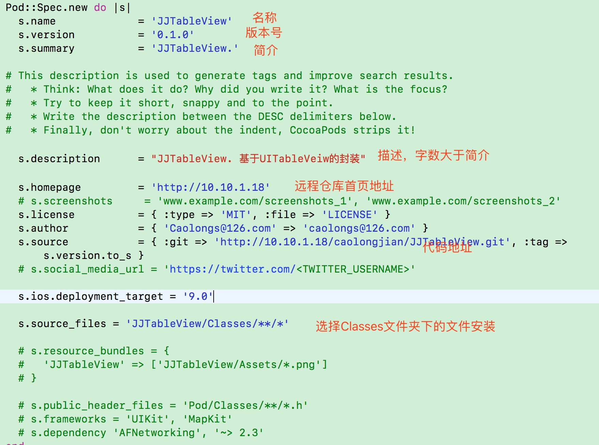
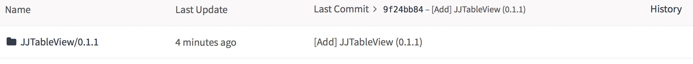
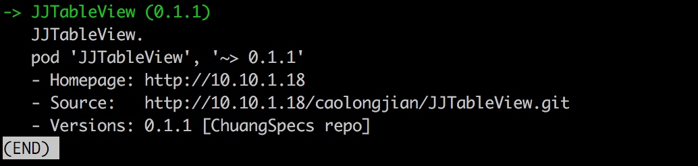

架构模式 MVC MVP MVVM
架构模式，也叫架构风格，一个架构模式描述软件系统里的基本的结构组织或纲要。架构模式提供一些呈先定义好的子系统，指定它们的责任，并给出把它们组织在一起的法则和指南。一个架构模式常常可以分解成很多个设计模式的联合使用。MVC模式就属于架构模式。
本文就 iOS 中使用 MVC、MVP、MVVM 架构模式表述个人见解。详细使用方法请参见 GitHub Demo
MVC
MVC 作为iOS开发中较为原始基本的架构模式，它把软件系统分为三个基本的部分：模型Model、视图View以及控制器Controller。这种模式的目的是为了实现一种动态的程序设计，简化后续对软件系统的修改和扩展，并使得程序的某一部分的复用成为可能。在此不做过多的解释，附图一张：

MVP
MVP 架构模式是 MVC 的一个变种，本人认为 MVC 与 MVP 两者之间最大的区别就是 MVP 中使用Presenter 对 View 和 Model 进行了解耦，View 中不会直接持有 Model 数据，之间的值传递都通过 Presenter 进行传递，换言之，Presenter 持有 View 和 Model，在其内部进行逻辑处理，并将处理后的结果直接传递给 View 显示。

- 当视图接收到来自用户的事件时，会将事件转交给 Presenter 进行处理
- 视图向外界暴露接口，当需要更新视图时， Presenter 通过视图暴露的接口更新视图的内容
- Presenter 持有模型并负责对模型进行操作和更新，在需要时取出其中存储的信息
- 当模型层改变时，可以将改变的信息发送给 Presenter
MVVM
MVVM有助于将图形用户界面的开发与业务逻辑或后端逻辑（数据模型）的开发分离开来。
使用 MVVM 架构模式开发的关键点在于 ViewModel 和 View 的双向绑定机制，View 的变动，自动反映在 ViewModel，反之，ViewModel 的改变能够通知到 View。

Demo 中采用绑定关系为，view 的改变通过调用 ViewModel 暴露的方法进行修改；ViewModel 的改变通过 KVO 监听来将变化的值传递给 View 进行展示。
组件化 - 远程私有库
远程私有库相对于本地私有库多了许多配置，对 .spec 文件的配置就显得尤为重要了许多
首先，一般采用pod库的形式来集成的远程私有库就需要我们对 cocoapods 的工作有一定的认识。

一、 创建远程私有索引库
在git托管平台创建 ChuangSpecs 工程 作为远程索引库 git 地址为
http://10.10.1.18/caolongjian/ChuangSpecs.git本地创建私有库索引仓库
pod repo add ChuangSpecs http://10.10.1.18/caolongjian/ChuangSpecs.git
注意： 若使用 git@10.10.1.18:caolongjian/ChuangSpecs.git 需配置SSH

二、 将本地项目推送到远程
- 在git托管平台创建 JJTableView 工程
并将本地的仓库和远程的仓库进行关联
git remote add origin http://10.10.1.18/caolongjian/JJTableView.git
git push -u origin master
注意： 第一次push的时候,加上-u参数,Git就会把本地的master分支和远程的master分支进行关联起来,以后的push操作就不再需要加上-u参数了
三、 配置 JJTableView.podspec 文件

1. 校验一下我们.spec文件是否合法
pod lib lint
若发现如下 n 多错误，请根据WARN 修改（泪奔，一开始忽略了警告，直接修改ERROR）默认Swift3.2 验证，代码是在Swift4.0下编写运行
-WARN | [iOS] swift: The validator used Swift 3.2 by default because no Swift version was specified. To specify a Swift version during validation, add the
swift_versionattribute in your podspec. Note that usage of the--swift-versionparameter or a.swift-versionfile is now deprecated.
错误：❌

解决方案,修改验证编译环境为 Swift 4.0

2. tag 标签
git tag 0.1.0
git push --tags
3. 校验远程 .spec文件是否合法
pod spec lint

4. .repo 提交到远程私有索引库
我们要将 JJTableView.podspec 提交到我们的远程私有索引库(ChuangSpecs)当中去，使用pod repo push [远程私有索引库名称] [框架名称的描述文件]
$ pod repo push ChuangSpecs JJTableView.podspec

对应远程索引库：
对应本地索引库：

使用 pod search JJTableView 搜索

四、 主工程使用组件
配置 podfile 文件
默认指定源是Cocoapods的官方索引库，需要添加自己的远程私有库添加source，记得默认源也要添加上
source 'https://github.com/CocoaPods/Specs.git' source 'http://10.10.1.18/caolongjian/ChuangSpecs.git'pod 'JJTableView'
#pod 'JJTableView', :path => '../Lib/JJTableView' pod 'JJTableView', '0.1.4'
执行 pod install
附问题：
问题一：pod lib lint 验证不通过 出错
Swift 验证版本问题，根据提示添加 swift_version 属性
问题二：二级目录没有显示出来

修改 s.source_files 加上 .swift

多级目录提交, 多文件之间尽量不要相互依赖
s.subspec 'CellKit' do |cellKit|
cellKit.source_files = 'JJTableView/Classes/JJTableView/CellKit/**/*'
cellKit.public_header_files = 'Pod/Classes/**/*.h'
cellKit.dependency 'AFNetworking', '~> 2.3'
end
文章目录


Copyright © 2015 Powered by MWeb, Theme used GitHub CSS.